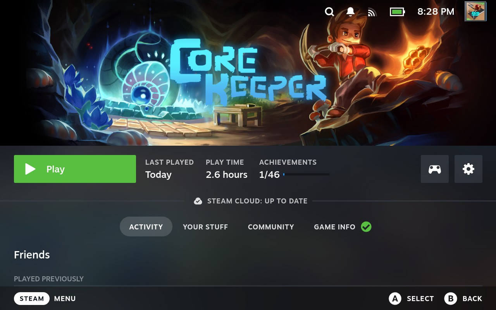

5. Games and the Games Library
5.1 Downloading Games
To download a game from your Steam Library:
- Click the button.
- Go to .
- Select the game you wish to download.
- Select .

Note:
If you have not purchased any games yet, skip to Section 5, The Steam Store, for how to purchase a game.
5.2 Launching Games
Once you have downloaded and installed games, they will show up in the Library Menu.
To play a game, find it in the Library menu.
Select to begin playing the game.

5.3 Game Menu
Using the button when playing a game brings up the Steam Menu. If you select the title of the game from this menu, then you can access the "Game Menu".
Selecting the option will close this overlay.
Selecting will allow you to rebind the controls in the current game to your liking.

will take you to the menu for the current game.

will allow you to see all of the Steam Achievements you currently have in the game. This is also where you can see how long you have played the current game.

will bring you to a list of guides from the Steam Community for the current game.
allows you to write notes for yourself related to the current game. You can create multiple notes.

5.4 Navigating the Games Library
As mentioned in 5.1 above, to access the Games Library:
- Click the button.
- Go to .
This will take you to the "Great on Deck" page of your Games Library.
When a game is considered, "Great on Deck," that means that the experience of playing it on the Steam Deck meets certain standards and becomes Verified.
Verified Games have a next to their name to show that:
- They have all of their functionality accessible when using the default controller configuration
- They show Steam Deck controller icons
- Their in-game interface text is legible on the Steam Deck
- Their default graphics configuration performs well on the Steam Deck
You can still play games that are not Verified (indicated with an orange "i" icon), but it could be difficult to play that game because of its controls or the interface is hard to read. These games are considered Playable.
Some games are too difficult to play on the Steam Deck, and so these are called Unsupported and are indicated with a grey circle with a slash through it.
If a game has a question mark within a dotted-outline circle, that means Steam has not gotten enough data yet to determine a game's Verified status.
Steam utilizes its users to evaluate if games are easily playable and worthy of the Verified status. Occasionally, when closing a game, the Steam Deck will ask you if yur experience with it matches whether it is Verified, Playable, or Unsupported.
To see all of your games, select the section within the Games Library by pressing .
To go back to the left category within the Games Library, press .

You can also quickly see all of your installed games by going to the section of the Games Library.
The section within the Games Library is for any games you have on your Steam Deck that you did not get through Steam.
The section is where any game soundtracks you have purchased as DLC (Downloadable Content) will appear.
The Games Library is sorted alphabetically automatically. When navigating through your games, press and to move quickly between letters of the alphabet.
You can press to sort your games by other criteria, such as "Friends Playing," "Hours Played," "Last Played," etc.

You can press to filter out games based on criteria such as Verified status, how many players (i.e. single-player, multiplayer), play state, hardware support, features, genre, and if one of your friends plays the game.

5.5 Game Page Interface
Selecting any game within your game library brings you to its page within your Steam Deck:
This will take you to the game's "Activity" section. From here, you can view your recent activity within the game. This allows you to post something about the game to your Steam Friends.
Also within this section, you can see a list of updates about the game from the developers.
The "Your Stuff" section of a game's page will show you all of your achievements, Steam Trading Cards, DLC, screenshots, and any reviews you've written for the game.
The Community section will show you all Community Content for the game: guides, artwork, posts, etc.